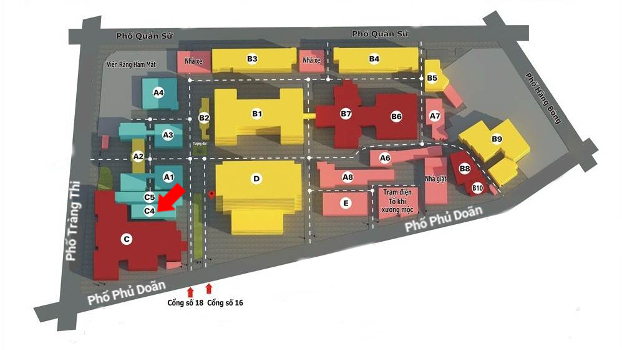

BookingCare là Nền tảng Y tế chăm sóc sức khỏe toàn diện hàng đầu Việt Nam kết nối người dùng với trên 150 bệnh viện - phòng khám uy tín, hơn 1,000 bác sĩ chuyên khoa giỏi và hàng nghìn dịch vụ, sản phẩm y tế chất lượng cao.
Từ nay, người bệnh có thể đặt lịch tại Khu khám bệnh theo yêu cầu, Bệnh viện Hữu nghị Việt Đức thông qua hệ thống đặt khám BookingCare.
- Được lựa chọn các giáo sư, tiến sĩ, bác sĩ chuyên khoa giàu kinh nghiệm
- Hỗ trợ đặt khám trực tuyến trước khi đi khám (miễn phí đặt lịch)
- Giảm thời gian chờ đợi khi làm thủ tục khám và ưu tiên khám trước
- Nhận được hướng dẫn chi tiết sau khi đặt lịch
Giới thiệu
Địa chỉ: Bệnh viện có nhiều cổng, bệnh nhân đến khám sẽ đến cổng:- Số 16 - 18 Phủ Doãn, Hoàn Kiếm, Hà Nội
- Sáng: 7h00 - 12h00
- Chiều: 13h30 - 16h30
Bệnh viện Việt Đức là một trong 5 bệnh viện tuyến Trung ương, hạng đặc biệt của Việt Nam. Bệnh viện có lịch sử trên 100 năm, bề dày truyền thống danh tiếng, là cái nôi của ngành ngoại khoa Việt Nam gắn liền với những thành tựu Y học quan trọng của đất nước.
Việt Đức là địa chỉ uy tín hàng đầu về ngoại khoa, tiến hành khám bệnh, chữa bệnh và thực hiện các kỹ thuật chụp chiếu, xét nghiệm, thăm dò chức năng cơ bản và chuyên sâu hàng ngày cho người dân.
Bệnh viện có đội ngũ y bác sĩ hùng hậu, nhiều người kiêm là cán bộ giảng dạy tại Đại học Y khoa Hà Nội hoặc Khoa Y Dược - Đại học Quốc gia Hà Nội. Trong số họ nhiều người là chuyên gia đầu ngành và bác sĩ giàu kinh nghiệm ở các chuyên khoa khác nhau.
Lưu ý quan trọng:
- Bệnh viện có nhiều khu khám bệnh, do đó để thuận tiện và tiết kiệm thời gian khi đi khám, người bệnh nên tìm hiểu kĩ về vị trí khu khám bệnh của mình trước khi đi khám.
- Bệnh viện Hữu nghị Việt Đức là bệnh viện chuyên về Ngoại khoa, vì vậy, lịch các bác sĩ thường linh động và ưu tiên khám cho các ca cấp cứu.
- Người bệnh nên chủ động chuẩn bị một số câu hỏi liên quan đến tình trạng của mình trước khi đi khám để hành trình khám bệnh được hiệu quả hơn.
1. Gói 1:
- Khám Giáo sư, Phó Giáo sư, Tiến sĩ, Bác sĩ Chuyên khoa II - Chi phí 500.000 đồng/lần khám
- Khám với bác sĩ Trưởng khoa hoặc Phó khoa - Chi phí 500.000 đồng/lần khám
- Khám Thạc sĩ, Bác sĩ Chuyên khoa I - Chi phí: 300.000 đồng/lần khám
Thế mạnh chuyên môn
Bệnh viện Việt Đức là bệnh viện chuyên khoa Ngoại (phẫu thuật),có thế mạnh về khám, điều trị và Phẫu thuật nhiều chuyên khoa. Một số thế mạnh của Bệnh viện Việt Đức là:- Khám, điều trị, phẫu thuật về Thần kinh
- Khám, điều trị, phẫu thuật về Cơ xương khớp
- Khám, điều trị, phẫu thuật về Cột sống
- Khám, điều trị, phẫu thuật về Tiêu hóa
- Khám, điều trị, phẫu thuật về Gan mật
- Khám, điều trị, phẫu thuật về Nam học
- Phẫu thuật tim mạch: Mổ tim mở được tiến hành thường quy, tiến hành các kỹ thuật tim mạch khó, thay van tim, kỹ thuật Bentall, bắc cầu mạch vành, mổ nối mạch ở tim đang đập.
- Phẫu thuật Thần kinh: Mổ chấn thương sọ não, bệnh ở não - tuỷ sống, mổ u tuyến yên qua xoang bướm, mổ u thần kinh VIII qua mê nhĩ có sử dụng dao siêu âm.
- Phẫu thuật Nội soi và nội soi can thiệp: Các loại phẫu thuật nội soi ổ bụng cắt túi mật, cắt u tuyến thượng thận, cắt dây thần kinh X, u nang buồng trứng, cắt lách, cắt ruột thừa bằng nội soi an toàn, tai biến ít, giảm ngày điều trị, phục hồi sau mổ nhanh.
- Phẫu thuật gan mật tuỵ: Cắt gan các loại do ung thư, bệnh gan mật và chấn thương; Các phẫu thuật về biến chứng chảy máu do xơ gan - tǎng áp lực tĩnh mạch cửa
- Phẫu thuật Chấn thương chỉnh hình: Các loại chấn thương, thay khớp háng một bên hay toàn bộ, nội soi khớp.
- Phẫu thuật tiêu hoá: Các kỹ thuật khó phức tạp như cắt bỏ và tạo hình thực quản, cắt khối tá tuỵ, cắt toàn bộ dạ dày, cắt đại tràng các loại.
- Bệnh lý thần kinh
- Nội - Hồi sức thần kinh
- Bệnh tim mạch và lồng ngực
- Phẫu thuật tim mạch - lồng ngực
- Ngoại nhi và trẻ sơ sinh
- Bệnh lý tiêu hóa
- Phẫu thuật tiêu hóa
- Bệnh cột sống/thoát vị đĩa đệm
- Chi trên và y học thể thao
- Bệnh lý chi dưới
- Khám xương và điều trị ngoại trú
- Phẫu thuật chấn thương chung
- Phẫu thuật tạo hình - hàm mặt - thẩm mỹ
- Phục hồi chức năng
- Nhiễm khuẩn
- Phẫu thuật nhiễm khuẩn
- Bệnh đường tiết niệu
- Bệnh nam học/nam khoa
- Bệnh lý gan mật
- Ung bướu
- Bệnh lý hậu môn trực tràng
- Thận lọc máu
- Bệnh lý hậu môn trực tràng
- Trung tâm ghép tạng
Trang thiết bị
Bệnh viện Việt Đức được trang bị hầu hết các trang thiêt bị hiện đại hàng đầu hiện nay phục vụ trong chẩn đoán và thực hiện các xét nghiệm cơ bản, xét nghiệm kỹ thuật cao như các xét nghiệm theo dõi bệnh nhân ghép tạng, các xét nghiệm chỉ điểm khối u.- Xquang số hóa
- Máy siêu âm
- Máy chụp cắt lớp vi tính đa dãy CT Scan
- Máy chụp cộng hưởng từ MRI 3.0 Tesla
- Hệ thống chụp mạch máy chuyên dụng
- Hệ thống PET/CT phát hiện ung thư sớm và đánh giá các bệnh lý tim mạch, thần kinh
- Hệ thống máy sinh hóa miễn dịch tự động, máy sinh hóa tự động, máy xét nghiệm huyết học, xét nghiệm đông máu tự động…
- Nội soi thực quản - dạ dày - tá tràng chẩn đoán
- Nội soi đại trực tràng chẩn đoán
- Nội soi đường mật - tụy ngược dòng ERCP
- Siêu âm nội soi chẩn đoán bệnh lý thuộc cơ quan tiêu hóa, chọc hút tế bào
- Nội soi can thiệp, nong hẹp đường tiêu hóa
- Nội soi đặt stent khí quản, đặt sonde tá tràng
- Nội soi can thiệp đại tràng.
Vị trí
Các trang web khác ghi địa chỉ Bệnh viện Việt Đức ở 40 Tràng Thi, đây là cổng chính nhưng thông thường chỉ dành cho những công việc giấy tờ, hành chính. Bệnh nhân đến khám sẽ đi các cổng phụ trên đường Phủ Doãn. Trên đường Phủ Doãn có 3 cổng và đường Tràng Thi có 1 cổng chính. Người bệnh nên đi đúng cổng như chỉ dẫn để đi đến phòng khám dễ dàng, nhanh chóng nhất.

quy trình khám
Dưới đây là Hướng dẫn làm thủ tục ưu tiên cho người bệnh đặt khám qua BookingCare tại Bệnh viện Hữu nghị Việt Đức.
Đến cổng bệnh viện tại 16-18 Phủ Doãn, Hàng Bông
Vào Tòa nhà C4, - Khoa khám bệnh theo yêu cầu
Vào tầng 1, lấy sô tại Khu vực ưu tiên dành cho bệnh nhân khám theo yêu cầu
Đến Cửa số 1, khi đến lượt thì vào báo đã đặt lịch qua BOOKINGCARE Hàng Bông
- Xe máy gửi tại bãi đỗ xe trước cửa bệnh viện (có nhân viên bảo vệ hướng dẫn).
- Xe ô tô: Hiện tại Bệnh viện chưa có chỗ gửi xe ô tô riêng biệt, xe ô tô bạn có thể gửi tại Cung Văn hóa Hữu nghị Việt Xô, cách bệnh viện khoảng 500m. Nếu được, bạn nên đi taxi để thuận tiện hơn.


- Đến quầy số 01, khi đến lượt vào báo đã Đặt lịch khám qua BOOKINGCARE (phiếu khám đã được in sẵn, người bệnh KHÔNG cần khai báo thêm).